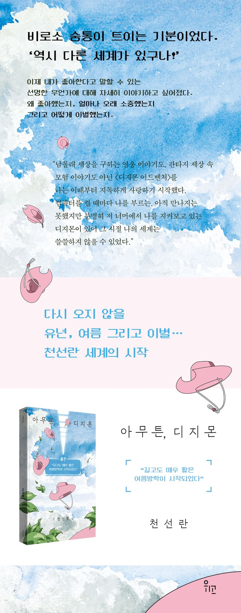

길고도 매우 짧았던 유년 시절에 건네는 작별, 천선란 세계의 시작
“찾아라 비밀의 열쇠, 미로같이 얽힌 모험들!” 세기말의 혼란이 막 잠잠해지려던 2000년, 신나는 가사의 오프닝 송과 함께 <디지몬 어드벤처>가 한국에 처음 방영되었다. 일곱 명의 평범한 초등학생들이 ‘선택받은 아이들’이 되어 디지털 세상에서 펼치는 모험 이야기에 당시의 어린이들은 열광했다. 열한 살의 천선란 역시 마찬가지였다. 모니터에 말을 걸며, 내 디지몬이 컴퓨터 안에어 아직 깨어나지 못한 건 아닐까 노심초사하는, 언젠가 디지털 세상으로 가게 될 것이라고 굳게 믿는 그에게 <디지몬 어드벤처>는 인생 최초의 SF이자, 그를 창작의 세계로 이끈 첫 작품이었다. 『아무튼, 디지몬』은 악에 맞서 싸우는 아이들의 모험에 설레고, “상처받고 외롭고 두렵지만, 용기와 위로 한마디로 언제든 다시 진화할 수 있는 인물”들에게서 위로를 받았던 유년 시절의 두근거림과 슬픔에 관한 이야기이자 그런 슬픔을 통해 글쓰기로 나아가는, 지금의 천선란 세계의 시작에 관한 이야기이다.
“노을이 가득 들어찬 집, 현관 앞 TV에 바싹 붙어 앉아, 이제 막 〈디지몬 어드벤처〉 첫 화를 본 열한 살의 나는 리키의 내레이션을 들으며 내게도 길고도 매우 짧은 여름방학이 시작되었다는 것을 깨달았다.”
